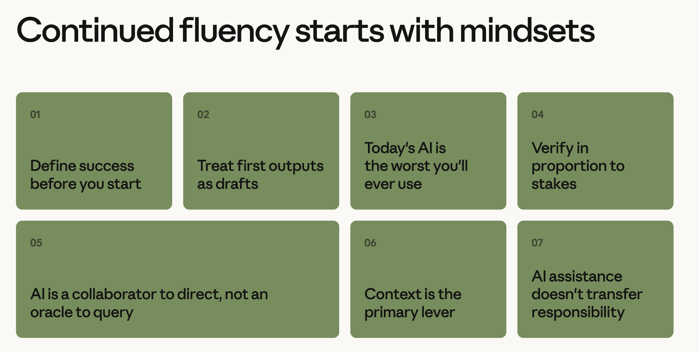
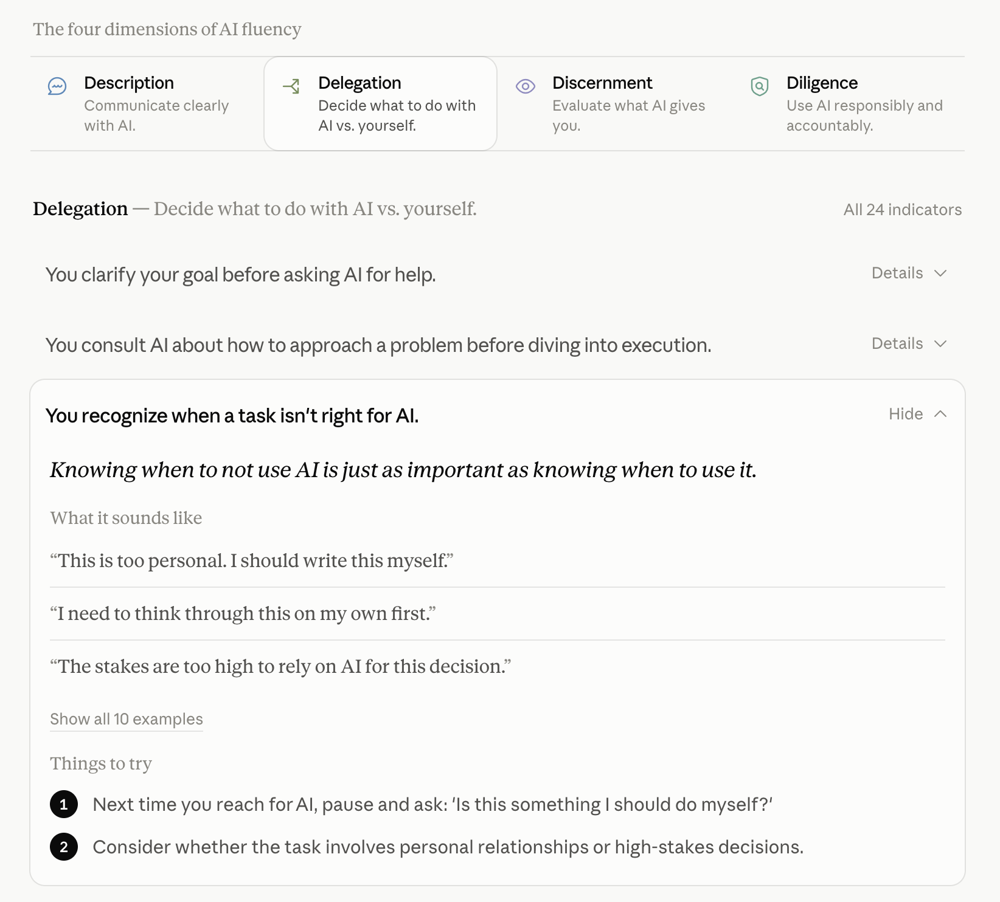

Millions of people visit Anthropic.com every month to learn about how to use AI. At Anthropic, we consider this a tremendous responsibility—and we have a team of educators dedicated to creating educational materials about how to use AI safely, effectively, and with intention. AI instruction should increase agency and empower learners to expand their capabilities.
Today, we’re sharing our approach to designing and scaling AI instruction to millions of learners worldwide via Claude Academy.
Why is it important to learn about AI now?
As model intelligence continues to evolve, the need for everyone to understand how to use AI safely and effectively becomes more urgent. Not only does AI education help people accomplish more, it helps them make informed decisions about how they want AI to show up in their communities and workplaces.
Learning to use AI will help individuals and organizations take advantage of the potential benefits of AI while mitigating some of the risk. This includes things like reducing manual work, unlocking new ways of working, and upskilling in new areas.
Claude Academy instruction mirrors Anthropic’s approach to educating its own employees
At Anthropic, we believe the journey to AI fluency begins on an employee’s first day. During onboarding, we teach all employees the 4D AI Fluency Framework, best practices on managing what agents know, and how fast the AI exponential moves. Learners practice making intentional decisions about what tasks should be done by AI and what tasks they should do themselves. They also learn the mistakes that AI tends to make so they can review AI-generated work more effectively. After onboarding, we offer a variety of “ever-boarding” (always-on onboarding) programs that deeply explore AI’s capabilities and limitations as well as evidence-based practices for working on human-agent teams. In a field moving this fast, continuous learning is an expectation for every role.
In addition to live and online instruction, we also provide all Anthropic employees with Claude-powered tools (like Claude Tag) to ensure they get instant answers to virtually any question related to the company, their job, or their specific onboarding plan. We also have Claude-moderated Slack channels for IT, legal, and benefits so people can focus on what matters most.
When employees become AI fluent, we see them forming teams flexibly around real problems, taking on projects with expanded scope, and learning from company experts at scale. For Anthropic, AI fluency is the foundation required to have impact
Breaking down our approach
In Claude Academy, all educational materials are designed to be broadly accessible, facilitating access to the most current information on how to work with AI and how AI works. Of course we offer learning about how to use Claude, but we also offer product and model agnostic learning that democratizes key information about this new technology that will have a wide-ranging impact on the world. In addition, we adhere to the following learning design principles.
AI education should increase human agency
Learning to use AI well should open up new doors and opportunities for students. Our learning materials are designed to help learners solve the problems they care about most. Instead of simply offering learning that shows you how to use our products and features, our education is centered on the problems you face at work and in life. Of note, our educational materials also encourage mindfulness about continuing to practice skills that matter to you in order to prevent skill atrophy. For example, this collection of legal use cases teaches you how to use Claude while also offering you the chance to reflect on what tasks should stay with you.

Mindsets matter
Given how fast AI is changing, mastering features alone won’t lead to lasting AI fluency. Even specific behaviors like “describe your audience” that were once useful have become less important when using the newest models. For example, where you used to have to tell Claude that your task is intended for “colleagues working in legal” now Claude will simply ask you for that information if it’s needed for a high quality output. Our education team has shifted away from emphasizing specific behaviors for AI fluency towards cultivating broader, more durable mindsets for using AI. Things like “today’s AI is the worst AI you’ll ever use” and “verify in proportion to the stakes” help people exercise good judgement with AI even as products and features change.

Safe and effective AI use extends far beyond the interactions someone has with AI
Most learning about AI focuses almost exclusively on a user’s conversation with an agent. While that’s critical, we also believe that the moments surrounding AI use are just as important. For example, we encourage learners to ask themselves what tasks should be delegated to AI in the first place and which tasks should stay with them. For example, you may want to draft sensitive parts of a memo but leave putting together summary slides to AI. Or you may want Claude to help with some exploratory data analysis but do final checks yourself. We also educate learners on how to ethically disclose AI use to colleagues, customers, and other stakeholders. This includes explicitly stating how AI was used in the production of documents, analyses, or media before you share it with others. This broader perspective ensures that learners build an intentional relationship with AI from the start.

Learning takes effort
Our use cases, tutorials, and courses encourage you to practice with Claude as you go. Our learning exercises encourage reflection and experimentation so learners can discover what works best for them when using AI. Of note, we believe that today’s Claude Academy experience is the most rigid it’ll ever be. With Claude, we’ll be able to deliver very personalized learning activities and exercises at a scale that hasn’t been possible before.

Once you learn to use AI, it can supercharge your learning on any topic
Learning how to use AI effectively doesn’t just make it easier to become fluent in AI; it also helps individuals and organizations alike upskill on virtually any topic. Trying to understand a dense explanation? Ask Claude to draw you a diagram explaining it. With Claude as your learning partner, socratic discussions or interactive explainers are simply a prompt away. Today’s products and models merely scratch the surface of what’s possible.
Using Claude Academy
Whether you’re an individual using AI in your day to day or a leader driving organizational transformation, Claude Academy has the tools to help you learn how to apply AI effectively and safely. Here’s how to use it:
- Get recommended courses based on areas of interest and completed learning
- Track course completion & badges
- To have Claude to recommend courses or learning paths from Claude Academy based on how you work, you can install the Claude Academy Skill.
You can access Claude Academy today directly at academy.claude.com or the “Learn more” tab in your Claude profile menu.
Looking ahead
We believe that Claude can be a tremendous learning partner, and we have big plans to fully realize that vision inside Claude Academy, but there’s still a lot of work ahead of us. As Claude becomes more capable, we anticipate new opportunities for personalized and interactive learning will emerge, and we are excited to partner with our users to shape the future of Claude Academy.
We welcome your feedback about what learning works best for you. Every course, tutorial, and use case offers you the chance to share what worked for you and how we can improve.
Start learning at Claude Academy today.